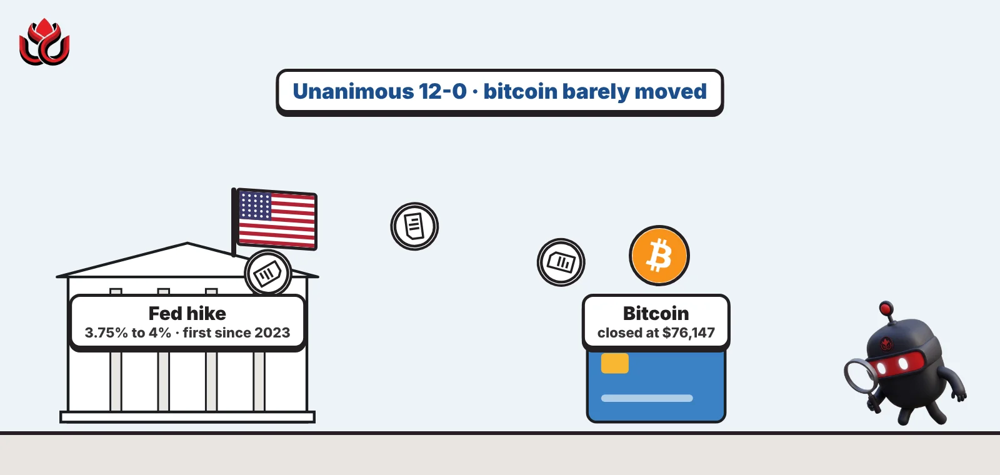
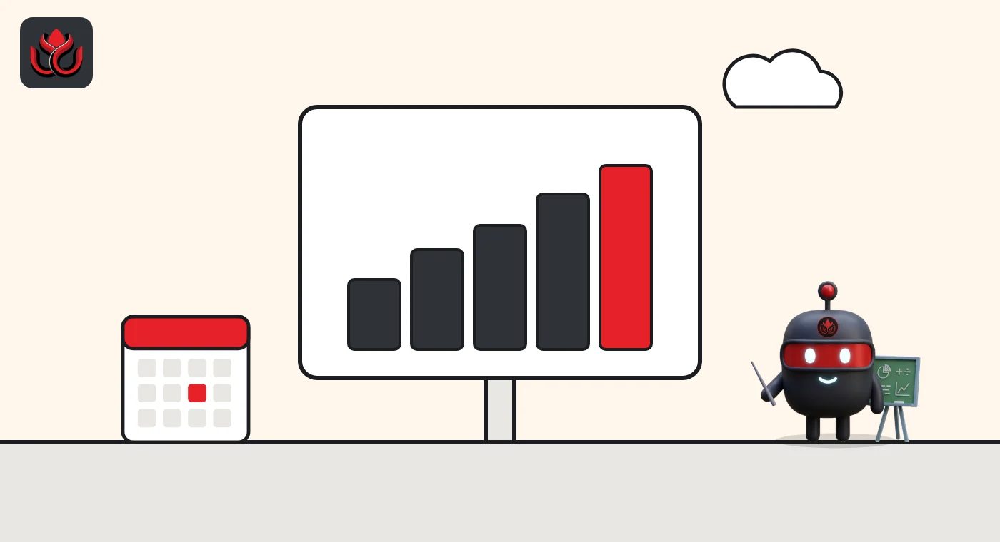

The Fed hiked for the first time since 2023. Why did bitcoin barely flinch at $76,000?
A unanimous quarter-point hike on September 16 took the US policy rate to 3.75% to 4%, and 16 of 18 officials penciled in more. Bitcoin closed the day at $76,147, up about 1% in two days.

Key points
- On September 16, 2026, the Fed raised rates by a quarter point to 3.75% to 4%, its first hike since 2023, in a 12 to 0 vote.
- Sixteen of 18 officials expect at least one more hike in 2026, and the median sees rates staying at 4.1% through 2027.
- Bitcoin barely reacted: $75,590 the day before, $76,147 on the day and $76,371 the day after, per CoinGecko.
What the Fed did
The US Federal Reserve raised interest rates on September 16, 2026, for the first time since 2023. Its policy committee lifted the federal funds target range by a quarter of a percentage point to 3.75% to 4%, according to the Fed's statement. All 12 voting members backed the move.
The federal funds rate is the overnight rate banks charge each other. It sets the tone for borrowing costs across the economy. It matters for crypto because higher rates make cash and bonds more attractive compared with assets that pay no yield, such as bitcoin.
The Fed explained itself in a few lines. The statement said "Inflation remains elevated" and that the hike would support a timelier return to the 2% goal. It described economic activity as expanding at a solid pace, with resilient spending and strong productivity growth. The Fed also raised the rate it pays banks on reserves to 3.90% and its primary credit rate to 4.0%, both effective September 17, its implementation note shows.
Officials signaled more to come
The bigger message came in the Fed's new economic projections. In the Summary of Economic Projections, the median official now sees the policy rate at 4.1% at the end of 2026, up from 3.8% in the June round. That implies one more quarter-point hike before the year is out.
Only 18 participants submitted forecasts. Twelve placed their 2026 dot at 4.125%, four went higher at 4.375%, and just two saw the rate staying at today's 3.875% midpoint. In other words, 16 of 18 expect further tightening.
The forecasts also explain why. Officials raised their 2026 inflation projection for the PCE price index (the Fed's preferred inflation gauge) to 3.7% from 3.6%, and core PCE to 3.4% from 3.3%. At the same time, they lifted growth to 2.3% and cut the expected unemployment rate to 4.1% from 4.3%. A stronger economy with sticky inflation is the classic case for higher rates.
Where the 18 officials see rates at year-end
The chart shows where the 18 officials placed the policy rate for the end of 2026. Each bar counts how many sat at each level.
Fed dot plot: end-2026 policy rate
officials
Source: Federal Reserve, Summary of Economic Projections, September 16, 2026
How bitcoin reacted
Bitcoin barely moved. It closed at $75,590 on September 15, the day before the decision, and at $76,147 on September 16, the day of the 2:00 p.m. ET announcement, CoinGecko data shows. On September 17 it closed at $76,371. That is a rise of about 1% over two days, in a week when the Fed did something it had not done in three years.
A move that small suggests the hike itself was not a surprise. The bigger signal was in the projections, and those point to a long period of higher rates rather than a sudden shock.
Bitcoin then moved higher later in the week. CoinGecko shows a close of $80,874 on September 18 and $81,236 on September 19, well above its level on decision day.

Higher rates into 2027 and beyond
The projections do not stop at 2026. The median official expects the policy rate to stay at 4.1% through the end of 2027, then ease only to 3.9% in 2028 and 3.6% in 2029, the Fed's table shows. In June, the same officials had penciled in 3.6% for 2027 and 3.4% for 2028. The long-run rate, the level officials see as neither boosting nor slowing the economy, moved up to 3.2% from 3.1%.
Officials also expect inflation to come down only slowly. Headline PCE inflation is forecast at 2.3% in 2027 and 2.1% in 2028, still above target, before reaching 2.0% in 2029. Growth is seen at 2.4% next year, with unemployment steady at 4.1% through 2029.
The Fed also lifted the rate on its overnight reverse repo facility, where money market funds park cash, to 3.75%, per the implementation note. That sets a higher floor for safe, short-term returns on cash, which is the yardstick any non-yielding asset is measured against.
Timeline
Fed raises the target range to 3.75% to 4% in a 12 to 0 vote
New projections show a median 4.1% policy rate for end-2026
Bitcoin closes at $76,147 (CoinGecko)
New reserve balance rate of 3.90% takes effect; bitcoin closes at $76,371
LC Insight analysis
This section is our reading of the facts above, not a statement of fact.
- We think the projections matter more for crypto than the hike. A Fed planning to hold rates near 4.1% through 2027 takes away the cheap-money tailwind that lifted bitcoin in past cycles.
- Markets had clearly priced the hike in. From here, the next big move likely depends on inflation data, not on what the Fed says.
- This is not 2022. Then, the Fed hiked into a slowing economy and bitcoin crashed. Now it is hiking into solid growth, which may be why bitcoin held, at least so far.
What's next
- September CPI report due mid-October
- Minutes of the September meeting, due in about three weeks
- Next FOMC decision on October 28, 2026
- Spot bitcoin ETF flows in the days after the hike
Disclaimer. This article is based on public information and the sources listed below as of the update time shown. It is for information only and is not investment, legal or tax advice. Figures may change as companies and authorities publish new data.